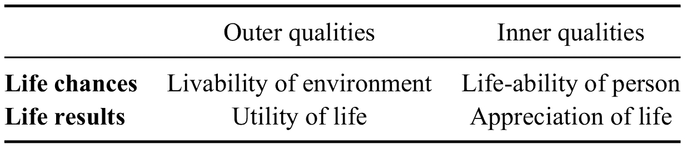
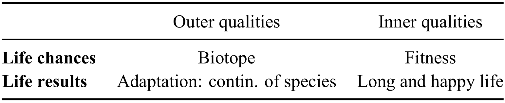

The Four Qualities of Life
Veenhoven on the different meanings of happiness
This is part of a series of posts on happiness. Find the whole series here.
Happiness words
In this series of posts, we’ve already talked a lot about happiness and the different theories about what it really is and how to get it. Let’s now have a look at the words we use to describe happiness. After all, when we talk about happiness, and even when we just think about it for ourselves, we always use the categories that our languages provide in order to make sense of the world. Imagine being born into a language that only has a word for “pleasure” but none for “happiness.” Or a language that uses the same word to describe “happiness” and “beauty.” It is easy to see how such changes in the language would affect one’s perception of what happiness is and what is required to achieve it.
In this chapter we will discuss a fascinating paper by Ruut Veenhoven, a Dutch sociologist who has been very influential in reviving interest in happiness studies and the science of happiness (there’s a link to the paper at the end of this article). He is a founding editor of the Journal of Happiness Studies and the founding director of the World Database of Happiness, which contains research about happiness studies across countries.
In the paper we are discussing, Veenhoven distinguishes between the following terms:
- Happiness
- Life satisfaction
- Quality of life
- Subjective well-being
- Welfare
Looking at these, we can ask: Do all these terms mean the same or different things? And: how would we describe some of the differences?

Kunal Kashyap: A Short History of Happiness
The pursuit of happiness has always been one of the main driving forces of human lives. This article recounts the amazing history of the concept of happiness, from ancient times to today, from Eudaimonia to Gross National Happiness.
We can probably agree that these terms are applied to a wide range of phenomena: “Well-being” can mean the quality of one’s life as a whole, but it can also mean how good or bad the practical conditions of one’s life are: for example, how the employment chances in one’s society are or how easily it is to access medical care. It can also mean how intense the feeling of relaxation and enjoyment are that a particular person enjoys at a particular moment in time (“this shower gel is the latest well-being trend”).
In the same way, “quality of life” can refer either to how good a country is in creating the conditions for happy lives (“the quality of life in Switzerland is high”) or it can also refer to the actual happiness of the citizens of a country (“the quality of life in Morocco was higher this year than last year”).
Inclusiveness of the terms
The question is, therefore, whether it makes sense at all to talk of one quality of life, as if there was one single thing that is meant by this term.
Veenhoven disputes whether there is one single thing that is meant when we use these terms. When we actually try to use these words in practice, we find that we need to be more specific and at this point we will try to clarify what we mean by each word.

It is also important to see that terms like “quality of life,” and “well-being” are really evaluations. “Quality of life,” for example, evaluates a life and ascribes to this life a particular “quality.”
But what exactly is being evaluated?
“Quality of life” can evaluate the life on an individual person: “Kate has a higher quality of life than Peter.” But it can also be used for aggregates, for example when we talk about the quality of life of women in the 20th century. Sometimes we may even use it to evaluate all human life over the course of history (“Quality of life has constantly improved since the ancient times”).
Other happiness terms also get used in confusing ways. “Happiness” can be used of animals (“the milk of happy cows”), of individual people (“a picture of happy children playing”) or of whole countries (“Copenhagen is the happiness capital of the world”).
Objective and subjective quality of life
If we want to untangle these terms, one distinction would be that between the objective and the subjective quality of life.
Clearly, these two can be different.
One can be rich but unhappy. Imagine someone who as all the money, all the material goods they might possibly desire, a loving family, and are living in a good place, but they are still depressed and anxious and miserable. Obviously, their objective quality of life can be high but they can still subjectively suffer.
The opposite is also possible. Monks and hermits typically don’t have possessions but they are regularly cited as some of the happiest people. Although monks living in material poverty would fail in every survey of objective well-being conditions, there is a whole field of research trying to establish why (particularly Buddhist) monks are so happy and whether there are any links between their religious practices and their apparent happiness.
Note also that subjective self-evaluation (“are you happy?”) is not a reliable way to estimate one’s happiness. A person may be mistaken about their own happiness in the same way that one might be mistaken about their health: “I feel younger than ever!” is rarely an accurate assessment of one’s objective medical condition.
The Happier Society. Erich Fromm and the Frankfurt School.
In this book, philosophy professor, popular author and editor of the Daily Philosophy web magazine, Dr Andreas Matthias takes the reader on a tour, looking at how society influences our happiness. Following Erich Fromm, the Frankfurt School, Aldous Huxley and other thinkers, we go in search of wisdom and guidance on how we can live better, happier and more satisfying lives today.
This is an edited and expanded version of the articles published on tis site.
Get it now! Click here!

Chances and outcomes
Another distinction is that between the chances that are inherent in a particular life and the actual outcomes that this life has produced or achieved. Both can be addressed as happiness or well-being, but they are very different.
Imagine an old, rich man on the one hand and a poor young student with excellent grades and a brilliant career ahead of him on the other. Who is happier?
Veenhoven talks of “life chances” and “life results.” Life chances are the (yet unrealised) possibilities inherent in a particular life situation. Life results are the actual achievements of a life well lived:
“Opportunities and outcomes are related, but are certainly not the same. Chances can fail to be realized, due to stupidity or bad luck. Conversely, people sometimes make much of their life in spite of poor opportunities.” (p.3)
Outer and inner qualities of life
Now consider two other factors influencing happiness: having a good family situation, and, on the other hand, being a cheerful person. What is the difference between these qualities?
We could say that what we see here is a difference between “external” and “internal” qualities. “External qualities of life” are qualities of the environment in which someone is situated. “Internal” qualities are properties of the person herself, her character or disposition.
Four qualities of life (p.4)
Taking these distinctions seriously, we can now see that what we usually perceive as one “quality of life” is really at least four different things:

The “livability of the environment” describes the living conditions: how a particular environment benefits or hinders the development of an individual’s life. The “life-ability of person” describes the inner qualities that make a particular person more or less able to cope with the problems of life (p.5). The “utility of life” refers to the outwardly visible results of one’s life: how one (and perhaps others) would judge the usefulness of one’s life. And finally, the appreciation of life describes how one’s life feels to oneself, how each one would themselves judge the quality of their own life.

Happiness researchers are faced with the question how to reliably measure happiness in surveys. We present three approaches discussed by economist Daniel Kahneman.
These distinctions are interesting, but not always clear. For example, what does “appreciation of life” really mean? Who is appreciating here and according to what standards? Are we supposed to appreciate our lives according only to our private standards for what we envision or lives to be, or should we also count other people’s appreciation of our life? If other people envy and admire us, is this something that should be counted here? Certainly, this is distinct from the “utility” of life, which is focused on the outward results of one’s life. But we can admire people for their inner qualities, too, regardless of their life’s success. It is not clear where such admiration would fit into the scheme proposed by Veenhoven.
Evolutionary metrics
In order to clarify the argument, Veenhoven gives examples from other disciplines that work with a similar four-fold division of concepts.
In biology, for example, we could have a table like this:

The life chances are the environmental conditions that determine the quality of life for an individual, that is, the good and bad aspects of a particular biotope in which the individual lives. The inner quality regarding life chances is the individual’s fitness. The outer quality in terms of life results is how well the individual is actually able to survive, and thus, how well the species survives. And the inner quality in terms of results is the long and “happy” life of the individual. “Happy” here should probably be understood to mean “successful” rather than happy in a psychological sense (which wouldn’t make sense for most species).
Meanings within the four quadrants
We can now try to insert a number of other terms into the four quadrants of Veenhoven’s scheme, just to see how they would fit. Try to distribute these traditional words or concepts into the boxes in the first table above:
- Pollution and global warming
- Traffic jams
- Material welfare and social equality
- Mental health
- Emotional intelligence
- The impact of a king’s life on history
- The influence of an inventor on technological development
- The value of Jesus' life for today’s Christians
- Satisfaction with the amount of one’s salary
- An evaluation of one’s personal attractiveness
- Satisfaction with one’s job
Can quality of life be measured inclusively?
Veehoven’s main argument is this: Cross-quadrant sum-scores make no sense.
One cannot meaningfully speak about ‘quality of life’ at large. It makes more sense to distinguish four qualities: 1) livability of the environment, 2) life-ability of the person, 3) utility of life for the environment, and 4) appreciation of life by the person. These qualities cannot be added, hence sum-scores make little sense. The best available summary indicator is how long and happily a person lives.
This means that we are never justified in speaking about “happiness” or “well-being” in a broad sense that would cross the boundaries of Veenhoven’s table. One cannot meaningfully compare chances with outcomes, or one’s appreciation of life with how useful one’s life appears to an observer. Is a the life of a young, educated person (high chances but low outcomes) better or the life of an old, accomplished scientist (low chances but high outcomes)? Such questions just don’t make much sense.
Also, we should note that there may be dependencies between the four quadrants, in the sense that some values depend on others (p.24). Which environmental conditions are good for the individual will depend on its inner survival qualities. A lion thrives in a different setting from a frog, or, as Veenhoven puts it: “An orchestra may be well equipped with violins, but if its members are horn players the musical performance will still be poor.”
Read more…
- Veenhoven, Ruut (2000). The Four Qualities of Life. Journal Of Happiness Studies, vol 1, pp 1-39. Find it here.